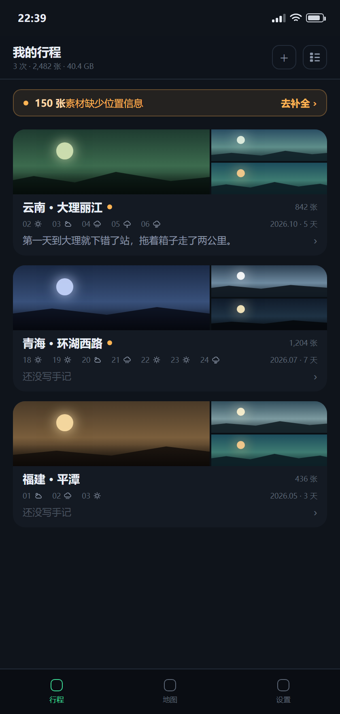
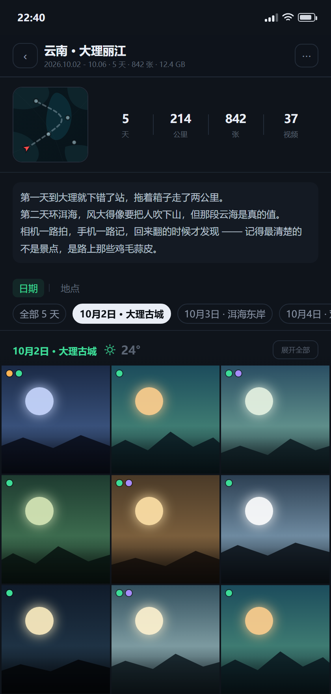
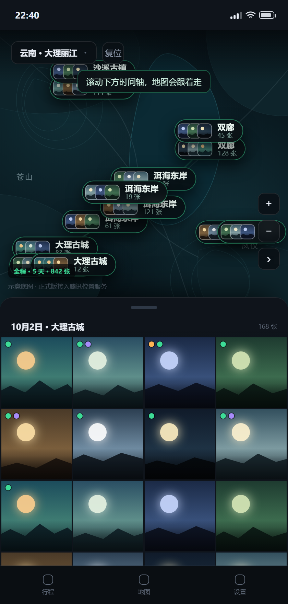
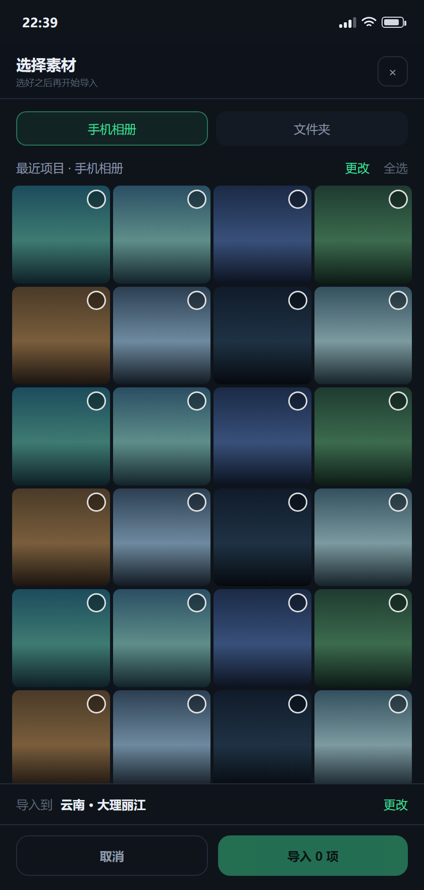
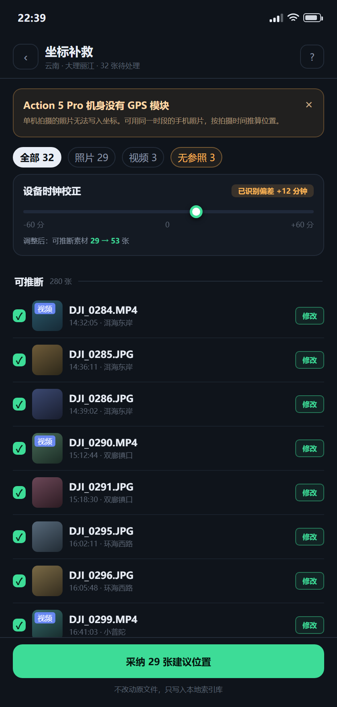

一次旅行会留下几百上千张照片：手机拍的、相机拍的、无人机拍的， 还有朋友在微信里传给你的。它们混在同一个相册， 过两周就找不回“这是在洱海哪一段”的记忆。
旅迹做的事很简单：把一段旅行重新变回一段旅行。 以行程为单位收拢照片，按天分组，按地点落在地图上， 再把最好的那几张挑出来，配一句当时想说的话。



导入时选好来源，照片按拍摄时间自动归到对应那一天。 没有拍摄时间的（微信转发、截图），会单独列出来，不会硬塞进某一天。
行程本身也可以随时改：名字、起止日期，天数自动重算。

封面只取你亲手挑选的照片：卡片用最近三次，列表用最近一次。 没挑过，就用行程里第一张。
地图上按位置聚合成点，滑动照片列表，地图会跟着走。 点开一张，可以看到它在行程中的位置。
长按照片进入选片模式，可以一次把多张加入精选，或者移除。
金色是封面，绿色是精选，紫色是写过备注的照片。三种颜色在两个页面里含义相同。
展板只显示你标记过的照片：封面、精选、有备注的。 不需要一张张翻，它替你记住“哪几张值得再看”。
手记写在行程下面，不限格式。返回首页时， 卡片上显示的是手记的第一行。

朋友在微信传给你的照片没有位置信息，无人机拍的没有 GPS， 时间也可能是错乱的。旅迹把这些照片单独列出来，等你补。
可以在地图上点一个位置，也可以搜地名。 补完的照片立刻离开这个列表，回到对应行程里。
不注册、不上传、不压缩。你的照片只在你自己的设备上。